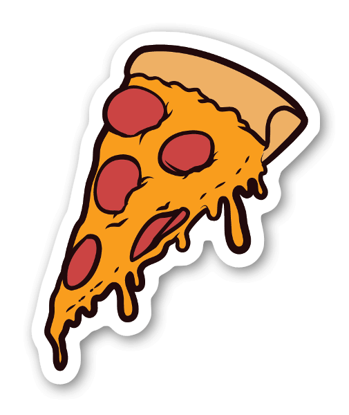

<DOCTYPE html>
  <html>
    <body>
      <h1>Moving Pizza</h1>

      <!-- The 4 Navigation Buttons
        - Arrows inserted via emoji keyboard
        - When mouse is down (user clicking / holding down button), moveup (etc.) funtions have the parameter "go"
        - When mouse goes up, move... functions have the parameter "stop"
        -->

      <button onmousedown="moveup('go')" onmouseup="moveup('stop')">↑</button>
      <button onmousedown="movedown('go')" onmouseup="movedown('stop')">
        ↓
      </button>
      <button onmousedown="moveleft('go')" onmouseup="moveleft('stop')">
        ←
      </button>
      <button onmousedown="moveright('go')" onmouseup="moveright('stop')">
        →
      </button>

      <!--Inserting the Pizza image + Styling-->

      

      <!--Inserting the box / frame + Styling -->

      <div id="Frame" style="border:1px solid black"></div>

      <script>
        //Start of JS Code

        var P_X = 100; //Top left corner of Pizza, X value (horizontal)
        var P_Y = 150; //Top left corner of Pizza, Y value (vertical)
        var P_W = 50; // Width of Pizza Slice image ??
        var P_H = 50; // Height of Pizza Slice image ??

        var R_X = 20; // Top left corner of Box, X value (horizontal)
        var R_Y = 120; // Top left corner of Box, Y value (vertical)
        var R_W = 200; // Width of box
        var R_H = 200; // Height of box

        var timer; // Creating a variable with the name timer

        // This is the Moveup Function - it has the new parameter startstop (in JS without '...')

        function moveup(startstop) {
          console.log("moveup function start"); // Check if the function runs

          // 1+2 Check if the button is (not) clicked --> if the new parameter "startstop" equals the "go" or "stop"
          // 3 Check if Pizza Y is smaller (=higher) than Box Y, stop moveup function

          if (startstop == "go") {
            timer = setInterval(moveup, 100); //var timer set to repeat the moveup function (without brackets!!- syntax), at 100/1000 sec
            console.log("moveup go");
          } // those brackets end statement automatically, no need for ;

          if (startstop == "stop") {
            clearInterval(timer); // the var timer is cleared when parameter startstop equals parameter stop
            console.log("moveup stop");
            return; // the function moveup is then cancelled / stopped completely
          }

          if (P_Y <= R_Y) {
            console.log("Pizza hit the frame");
            return;
          }

          // This is the actual moveup function --> moves up the Pizza by 10px

          P_Y = P_Y - 10;
          document.getElementById("Pizza").style.top = P_Y + "px"; // Insert the new position!! Maßeinheit hinzufügen!
          console.log("in moveup Funktion unten angekommen");
        } // End of moveup function

        //This is the moveleft function
        function moveleft(startstop) {
          console.log("moveleft function start");

          if (startstop == "go") {
            timer = setInterval(moveleft, 100);
            console.log("moveleft go");
          }

          if (startstop == "stop") {
            clearInterval(timer);
            console.log("moveleft stop");
          }

          if (P_X <= R_X) {
            return;
          }
          P_X = P_X - 10;
          document.getElementById("Pizza").style.left = P_X + "px";
        }

        //This is the movedown function

        function movedown(startstop) {
          console.log("movedown function start");

          if (startstop == "go") {
            timer = setInterval(movedown, 100);
          }
          if (startstop == "stop") {
            clearInterval(timer);
          }

          if (P_Y + P_H >= R_Y + R_H) {
            return;
          }
          P_Y = P_Y + 10;
          document.getElementById("Pizza").style.top = P_Y + "px";
        }

        //This is the moveright function

        function moveright(startstop) {
          if (startstop == "go") {
            timer = setInterval(moveright, 100);
          }
          if (startstop == "stop") {
            clearInterval(timer);
          }
          if (P_X + P_W >= R_X + R_W) {
            return;
          }
          P_X = P_X + 10;
          document.getElementById("Pizza").style.left = P_X + "px";
        }

        document.getElementById("Pizza").style.position = "fixed";
        document.getElementById("Pizza").style.padding = "0";
        document.getElementById("Pizza").style.top = P_Y + "px";
        document.getElementById("Pizza").style.left = P_X + "px";
        document.getElementById("Pizza").style.height = P_H + "px";
        document.getElementById("Pizza").style.width = P_W + "px";

        document.getElementById("Frame").style.position = "fixed";
        document.getElementById("Frame").style.top = R_Y + "px";
        document.getElementById("Frame").style.left = R_X + "px";
        document.getElementById("Frame").style.height = R_H + "px";
        document.getElementById("Frame").style.width = R_W + "px";
      </script>
    </body>
  </html></DOCTYPE
>
